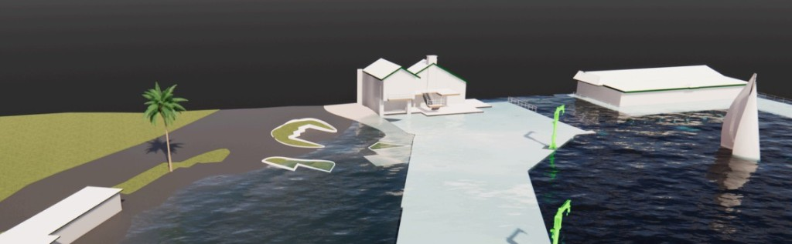

Property Owners
Property Documentation: Maximizing Value Across the Ownership Lifecycle

In an era of accelerating climate change and increasing weather-related threats, effective disaster preparedness and response have become paramount concerns for governments, businesses, and communities globally. The ability to achieve a rapid, successful recovery often hinges on the quality and accessibility of information available to emergency managers and planning offices. Existing Conditions Documentation (ECD) provides an essential, accurate foundation for preparing for and recovering from disasters.
By capturing the precise physical reality of terrain, infrastructure, and property before a disaster strikes, ECD transforms resilience planning into an actionable, data-driven strategy. Investment in high-fidelity ECD technologies is the single most critical proactive measure a community can take to minimize damage, accelerate recovery, and ensure long-term stability. The integration of accurate, georeferenced data fundamentally changes the economics and logistics of disaster response through superior risk modeling and resource allocation.
The global risk landscape is evolving rapidly, driven by complex environmental and socio-economic factors. The scope of disaster is broadening, with rising sea levels, fires, mudslides, and extreme weather patterns, amplified by climate change, threatening property and populations with increasing frequency and severity. This escalating threat places immense strain on public and private resources, with the true cost extending beyond immediate property damage to include economic disruption, supply chain failure, and lengthy, costly recovery processes. Reliance on outdated documentation during a crisis translates directly into critical delays, inefficient resource deployment, and unnecessarily high casualty rates.
To manage this escalating risk effectively, detailed, pre-existing knowledge of the exact conditions of threatened areas is indispensable.
The coordinated execution of these processes yields accurate terrain, structure, and route data. This output is delivered as georeferenced digital models and actionable datasets compatible with Geographical Information Systems (GIS) and Building Information Modeling (BIM) platforms. This pre-disaster digital twin establishes a single, verified baseline against which all post-disaster assessments and recovery efforts are measured.
The value of ECD is realized across the entire disaster management lifecycle, with distinct benefits in both preparedness and recovery phases.
ECD is the bedrock of intelligent disaster preparedness, enabling a transition from generalized risk assessment to highly specific, predictive modeling. This allows communities to invest in mitigation efforts where they will have the greatest impact.
After a disaster, ECD transitions to an indispensable recovery asset, minimizing loss and accelerating the process through speed and accuracy.
The rising costs of modern disasters can be mitigated through strategic, data-centric planning. Investing in ECD is a fundamental shift in disaster management philosophy, a proactive measure that yields substantial returns in times of crisis. By creating a comprehensive digital twin, ECD empowers communities to simulate, plan, and respond with unparalleled accuracy. Policymakers must recognize ECD not as an optional expense, but as a mandatory component of long-term risk mitigation.
Contact us for an Existing Conditions Documentation Quote.
Get in TouchProperty Documentation: Maximizing Value Across the Ownership Lifecycle
Accurate plans and models fast
2D Plans, 3D models and thorough Photo Documentation
Planning for transition, growth and safety with ECD
Efficient, profitable, property operation and management with ECD
ECD: The Blueprint for Flawless Events
Cost Reduction and Risk Mitigation in Construction
An accurate foundation for success in modern landscape architecture
Planning resilience, recovery, or baseline documentation before the next event? Talk with our team.
Get in TouchA comprehensive list of types of buildings, sites, and campuses Ground Truth 3D has scanned, with links to content where available.
Discuss scope, deliverables, and timeline with our team.
Get in TouchStart with a conversation about your documentation needs.
Get in Touch